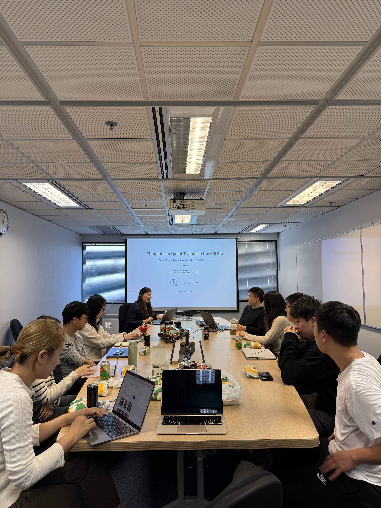

Dr Yikang Li delivered a seminar at HKUST on 4 February exploring the transition from AI towards artificial general intelligence and its potential implications for quantitative finance and trading. The event connected emerging research with perspectives from real-world financial applications.

HKUST welcomed Dr Yikang Li for a seminar entitled “Thoughts on Quantitative Trading in the AGI Era” on 4 February. Held at AIS Meeting Room A, the event addressed the potential implications of progress towards artificial general intelligence for quantitative finance and trading.
Drawing on perspectives from real-world financial applications, the seminar brought together two closely connected areas of inquiry: the development of increasingly capable AI systems and their use in data-intensive financial environments. The topic offered an opportunity to consider how advances in AI may shape the methods and systems used in quantitative research.
Connecting AI research with financial applications
The seminar’s focus reflects the growing intersection between AI development and quantitative finance. Financial applications provide a practical context for examining how models process information, represent events and produce forecasts. They also bring attention to the relationship between research methods and the conditions in which data-driven systems are used.
Dr Li’s research background spans collective intelligence, AI-powered event perception and forecasting, multimodal fusion and continual learning. These areas provide a foundation for considering how systems can integrate different information sources and adapt as new data become available. His parallel work in investment brings a practitioner’s perspective to the development of AI-based analytical capabilities.
The question of what a transition towards AGI might mean for quantitative trading remains open. Framing the seminar around this question connected current applications with longer-term possibilities, while grounding the subject in experience at the intersection of AI research and finance.

About the speaker
At the time of the event announcement, Dr Li was introduced as a tenure-track Associate Professor at the Shanghai Innovation Institute and Director of the DELTA Lab. His research focused on collective intelligence and AI-powered event perception and forecasting systems.
The announcement also identified him as a Partner at FFT Investment, where he led AI and data teams working on global asset valuation through advanced machine learning models. His work emphasises data-driven, practice-oriented research, including the development of systems intended for real-world applications.
Dr Li holds a PhD in Computer Vision and Machine Learning from CUHK MMLab and dual bachelor’s degrees in Electrical Engineering and Economics from Tsinghua University. This combination of technical and economic training informed the interdisciplinary perspective represented by the seminar.
Event information
Date: 4 February
Time: 13:00
Venue: AIS Meeting Room A, Room 4379, HKUST
Speaker: Dr Yikang Li
Speaker homepage: https://liyikang.top/
All events and news